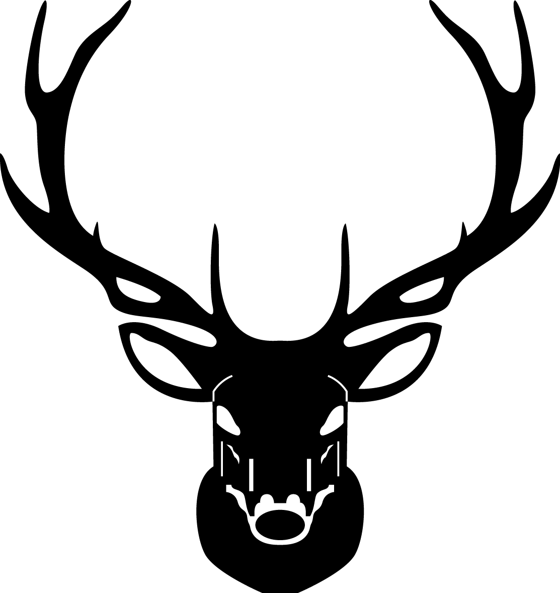
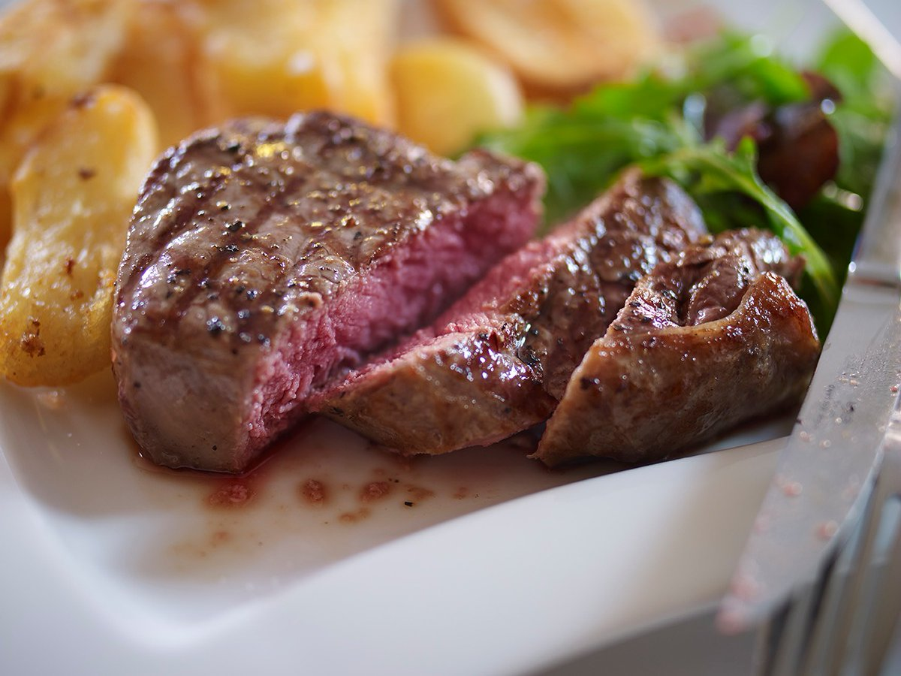
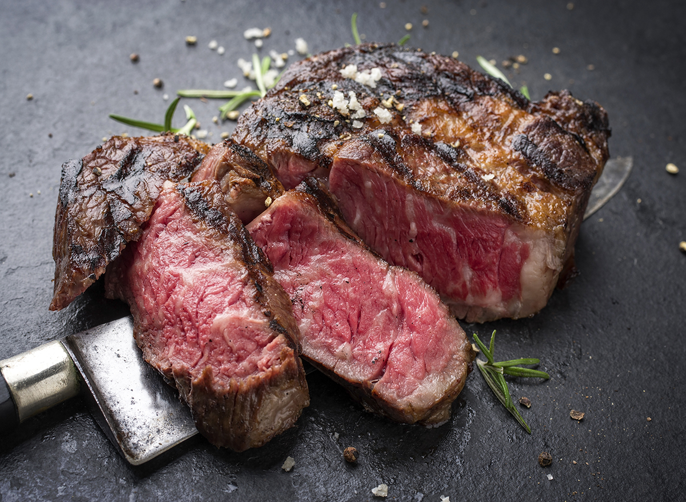
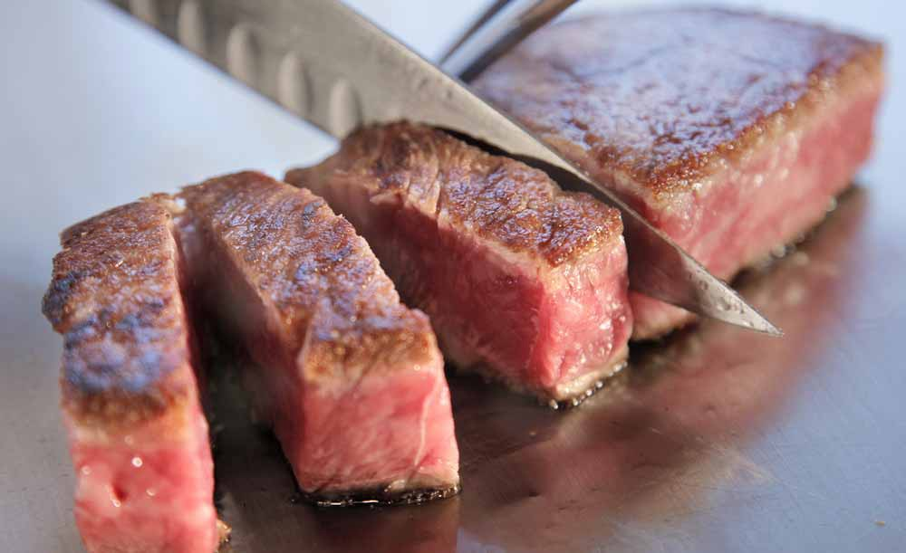
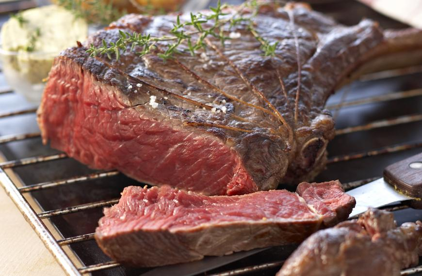

Domov
Kontakt
MENU
Galeria
Rezervacia

U Jeleňa.

PIEMONTESE, Taliansko: Fassone Piemontese má vďaka kŕmeniu trávou jemnú chuť, hodvábnu štruktúru 32/54

WAGYU 9+, Austrália: Kríženec Tajima-gyu a Black Angus 90/120

Vzácne japonské wagyu z prefektúry Hjógo, ktorej hlavným mestom je Kobe. 89/170

Najobľúbenejší steak medzi skutočnými znalcami mäsa, známy ako Cowboy steak. 7/100g